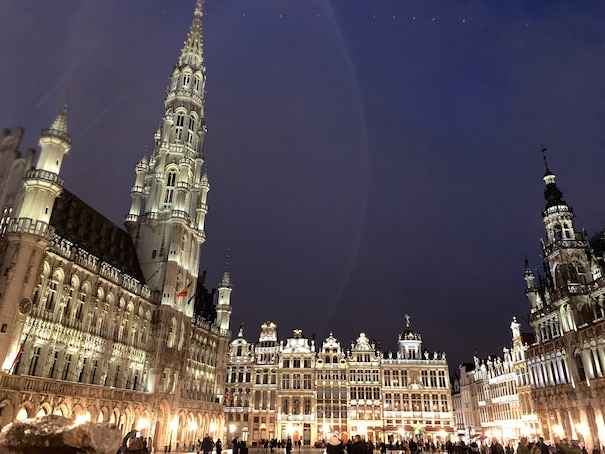
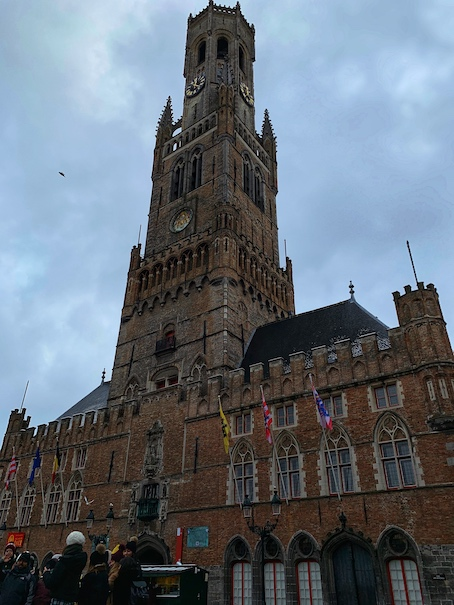
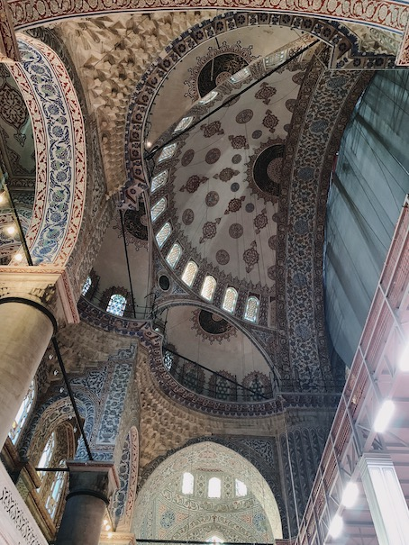

I also love architecture and could go on about different styles all day, so in order to avoid that I'll share some pictures that I've taken on my vacations instead:

This was taken at the town square in Brussels, Belgium. The town hall is built in a Brabantine Gothic style, characteristic of the Low Countries.

This is the famed Belfry of Bruges, Belgium. A mix of several different architectural styles–primarily Brabantine Gothic with some Flemish elements–this historic tower features heavily in the movie In Bruges.

This shows the ornate ceilings of the Blue Mosque in Istanbul, Turkey–such intricate art and calligraphy is typical of Islamic architecture. This particular mosque was built in the Ottoman style, though it also features elements from it's Byzantine neighbor: Aya Sofya.